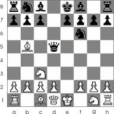

Reading 3: Efficiency
Reading exercises are due by 10pm the night before class.
This message used to appear when you tried to delete the contents of your Internet Explorer cache from inside Windows Explorer (i.e., you browse to the cache directory, select a file containing one of IE’s browser cookies, and delete it).
Put aside the fact that the message is almost tautological (“Cookie… is a Cookie”) and overexcited (“!!”).
Does it give the user enough information to make a decision?
Suppose you selected all your cookie files and tried to delete them all in one go. You get one dialog for every cookie you tried to delete! What button is missing from this dialog?
One way to fix the too-many-questions problem is Yes To All and No To All buttons, which short-circuit the rest of the questions by giving a blanket answer. That’s a helpful shortcut, which improves efficiency, but this example shows that it’s not a panacea.
This dialog is from Microsoft’s Web Publishing Wizard, which uploads local files to a remote web site. Since the usual mode of operation in web publishing is to develop a complete copy of the web site locally, and then upload it to the web server all at once, the wizard suggests deleting files on the host that don’t appear in the local files, since they may be orphans in the new version of the web site.
But what if you know there’s a file on the host that you don’t want to delete? What would you have to do?
If your interface has a potentially large number of related questions to ask the user, it’s much better to aggregate them into a single dialog. Provide a list of the files, and ask the user to select which ones should be deleted. Select All and Unselect All buttons would serve the role of Yes to All and No to All.
Here’s an example of how to do it right, found in Eclipse. If there’s anything to criticize in Eclipse’s dialog box, it might be the fact that it initially doesn’t show the filenames, just their count – you have to press Details to see the whole dialog box. Simply knowing the number of files not under version control is rarely enough information to decide whether you want to say yes or no, so most users are likely to press Details anyway.
Chunking
“Chunk” is a unit of memory or perception
Depends both on presentation and on what you already know



The elements of perception and memory are called chunks. In one sense, chunks are defined symbols; in another sense, a chunk represents the activation of past experience. Chunking is illustrated well by a famous study of chess players. Novices and chess masters were asked to study chess board configurations and recreate them from memory. The novices could only remember the positions of a few pieces. Masters, on the other hand, could remember entire boards, but only when the pieces were arranged in legal configurations. When the pieces were arranged randomly, masters were no better than novices. The ability of a master to remember board configurations derives from their ability to chunk the board, recognizing patterns from their past experience of playing and studying games. (De Groot, A. D., Thought and choice in chess, 1965.)
Working memory is where you do your conscious thinking. The currently favored model in cognitive science holds that working memory is not actually a separate place in the brain, but rather a pattern of activation of elements in the long-term memory. A famous old result is that the capacity of working memory is roughly 7 ± 2 chunks. A recent reanalysis of the same experiment has amended that estimate to 4 ± 1 chunks (Parker, “Acta is a four-letter word,” Acta Psychiatrica Scandinavica, 2012). Either way, it’s pretty small! Although working memory size can be increased by practice (if the user consciously applies mnemonic techniques that convert arbitrary data into more memorable chunks), it’s not a good idea to expect the user to do that. A good interface won’t put heavy demands on the user’s working memory.
Data put in working memory disappears in a short time–a few seconds or tens of seconds. Maintenance rehearsal—repeating the items to yourself—fends off this decay, but maintenance rehearsal requires attention. So distractions can easily destroy working memory.
Long-term memory is probably the least understood part of human cognition. It contains the mass of our memories. Its capacity is huge, and it exhibits little decay. Long-term memories are apparently not intentionally erased; they just become inaccessible.
Maintenance rehearsal (repetition) appears to be useless for moving information into long-term memory. Instead, the mechanism seems to be elaborative rehearsal, which seeks to make connections with existing chunks. Elaborative rehearsal lies behind the power of mnemonic techniques like associating things you need to remember with familiar places, like rooms in your childhood home. But these techniques take hard work and attention on the part of the user. One key to good learnability is making the connections as easy as possible to make–and consistency is a good way to do that.
Our ability to form chunks in working memory depends strongly on how the information is presented: a sequence of individual letters tend to be chunked as letters, but a sequence of three-letter groups tend to be chunked as groups. It also depends on what we already know. If the three letter groups are well-known TLAs (three-letter acronyms) with well-established chunks in long-term memory, we are better able to retain them in working memory.
Take advantage of this as a designer: don’t present information as long undifferentiated strings of random characters or numbers. At the very least, break them up into 3- or 4-character groups. Still better, find a way to make the chunks more familiar. This applies not just to random numbers or hashes, but to all kinds of data displayed in an interface.

You probably saw this example when you signed up for your MIT Athena account. The keywords that you use to prove you have this account coupon are words–much easier to remember and type than the 10-digit, unchunked MIT identifier right above them. (Thanks to Kyle Murray for this example.)
reading exercises
Which of the following sequences fit easily in working memory? (choose all good answers)
(missing explanation)
Pointing and Steering
Fitts’s Law specifies how fast you can move your hand to a target of a certain size at a certain distance away (within arm’s length, of course). It’s a fundamental law of the human sensory-motor system, which has been replicated by numerous studies. Fitts’s Law applies equally well to using a mouse to point at a target on a screen. In the equation shown here, reaction time is the time to get your hand moving, and movement time is the time spent moving your hand.
Moving your hand to a target is closed-loop control
Each cycle covers remaining distance D with error εD

We can explain Fitts’s Law by appealing to a simplified model of human information processing. Fitts’s Law relies on closed-loop control. Assume that D >> S, so your hand is initially far away from the target. In each cycle, your motor system instructs your hand to move the entire remaining distance D.
Your motor system can do that in one big motion of roughly constant time, Tm, but the accuracy of that single motion is proportional to the distance moved, so your hand gets within some error εD of the target (possibly undershooting, possibly overshooting). Your perceptual system perceives where your hand arrived in constant time Tp, and your cognitive system compares that location with the target in time Tc. Then your motor system issues a correction to move the remaining distance εD — which it does, but again with proportional error, so your hand is now within ε2D. This process repeats, with the error decreasing geometrically, until n iterations have brought your hand within the target — i.e., εnD ≤ S.
Solving for n, and letting the total time T = n (Tp + Tc + Tm), we get:
T = a + b log (D/S)
where a is the reaction time for getting your hand moving, and b = - (Tp + Tc + Tm)/log ε.
Fitts’s Law has some interesting implications.
The edge of the screen stops the mouse pointer, so you don’t need more than one correcting cycle to hit it. Essentially, the edge of the screen acts like a target with infinite size. (More precisely, the distance D to the center of the target is virtually equal to S, so T = a + b log (D/S + 1) solves to the minimum time T = a.) So edge-of-screen real estate is precious. The Macintosh menu bar, positioned at the top of the screen, is faster to use than a Windows menu bar (which, even when a window is maximized, is displaced by the title bar).
Similarly, if you put controls at the edges of the screen, they should be active all the way to the edge to take advantage of this effect. Don’t put an unclickable margin beside them.
Fitts’s Law also explains why pie menus are faster to use than linear popup menus. With a pie menu, every menu item is a slice of a pie centered on the mouse pointer. As a result, each menu item is the same distance D away from the mouse pointer, and its size S (in the radial direction) is comparable to D. Contrast that with a linear menu, where items further down the menu have larger D, and all items have a small S (height).
According to one study, pie menus are 15-20% faster than linear menus (Callahan et al. “An empirical comparison of pie vs. linear menus,” CHI 1991). Pie menus are used occasionally in practice–in some computer games, for example, and in the Sugar GUI created for the One- Laptop-Per-Child project. The picture here shows a pie menu for Firefox available as an extension. Pie menus are not widely used, however, perhaps because the efficiency benefits aren’t large enough to overcome the external consistency and layout simplicity of linear menus.
Related to efficiency in general (though not to Fitts’s Law) is the idea of a gesture, a particular movement of the mouse (or stylus or finger) that triggers a command. For example, swiping the mouse to the left might trigger the Back command in a web browser. Pie menus can help you learn gestures, when the same movement of your mouse is used for triggering the pie menu command (note that the Back icon is on the left of the pie menu shown). The combination of pie menus and gestures is called “marking menus”, which have been used with good results in some research systems (Kurtenbach & Buxton, “User Learning and Performance with Marking Menus,” CHI 1994.)
Time T to move your hand through a tunnel of length D and width S is: T = a + b D/S
Index of difficulty is now linear, not logarithmic
So steering is much harder than pointing
Thus cascading submenus are hard to use

As we discussed in the first reading, cascading submenus are hard to use, because the mouse pointer is constrained to a narrow tunnel in order to get over into the submenu. Unlike the pointing tasks that Fitts’s Law applies to, this steering task puts a strong requirement on the error your hand is allowed to make: instead of iteratively reducing the error until it falls below the size of the target, you have to continuously keep the error smaller than the size of the tunnel. The figure shows an intuition for why this works. Each cycle of the motor system can only move a small distance d such that the error εd is kept below S. The total distance D therefore takes D/d = εD/S cycles to cover. As a result, the time is proportional to D/S, not log D/S. It takes exponentially longer to hit a menu item on a cascading submenu than it would if you weren’t constrained to move down the tunnel to it.
Windows tries to solve this problem with a 500 ms timeout before opening a submenu, but this means reduced efficiency when the user actually wants to open that submenu.
The Mac gets a Hall of Fame nod here: when a submenu opens, it provides an invisible triangular zone, spreading from the mouse to the submenu, in which the mouse pointer can move without losing the submenu. The user can point straight to the submenu without unusual corrections, and without even noticing that there might be a problem. (Hall of Fame interfaces may sometimes be invisible to the user! They simply work better, and you don’t notice why.)
Steering tasks are surprisingly common in systems with cascading submenus. Here’s one on a website. Try hovering over Authors to see its submenu. How do you have to move the mouse in order to get to “Paper instructions”?
Now that we’ve discussed aspects of the human cognitive system that are relevant to user interface efficiency, let’s derive some practical rules for improving efficiency.
First, let’s consider mouse tasks, which are governed by pointing (Fitts’s Law) and steering. Since size matters for Fitts’s Law, frequently-used mouse affordances should be big. The bigger the target, the easier the pointing task is. Similarly, consider the path that the mouse must follow in a frequently-used procedure. If it has to bounce all over the screen, from the bottom of the window to the top of the window, or back and forth from one side of the window to the other, then the cost of all that mouse movement will add up, and reduce efficiency. Targets that are frequently used together should be placed near each other.
We mentioned the value of screen edges and screen corners, since they trap the mouse and act like infinite-size targets. There’s no point in having an unclickable margin at the edge of the screen. Finally, since steering tasks are so much slower than pointing tasks, avoid steering whenever possible. When you can’t avoid it, minimize the steering distance. Cascading submenus are much worse when the menu items are long, forcing the mouse to move down a long tunnel before it can reach the submenu.
reading exercises
Consider using the mouse to choose File, Quit from the menubar. Which of the following is the best model for these mouse movements? (choose one best answer)
(missing explanation)
Shortcuts
A common way to increase efficiency of an interface is to add keyboard shortcuts —- easily-memorable key combinations. There are conventional techniques for displaying keyboard shortcuts (like Ctrl-N and Ctrl-O) in the menubar. Menubars and buttons often have accelerators as well (the underlined letters, which are usually invoked by holding down Alt to give keyboard focus to the menubar, then pressing the underlined letter). Choose keyboard shortcuts so that they are easily associated with the command in the user’s memory.
Keyboard operation also provides accessibility benefits, since it allows your interface to be used by users who can’t see well enough to point a mouse. We’ll have more to say about accessibility in a future reading.
Defaults are common answers already filled into a form. Defaults help in lots of ways: they provide shortcuts to both novices and frequent users; and they help the user learn the interface by showing examples of legal entries. Defaults should be fragile; when you click on or Tab to a field containing a default value, it should be fully selected so that frequent users can replace it immediately by simply starting to type a new value. (This technique, where typing replaces the selection, is called pending delete. It’s the way most GUIs work, but not all. Emacs, for example, doesn’t use pending delete; when you highlight some text, and then start typing, it doesn’t delete the highlighted text automatically.) If the default value is wrong, then using a fragile default allows the correct value to be entered as if the field were empty, so having the default costs nothing.
Incidentally, it’s a good idea to remove the word “default” from your interface’s vocabulary. It’s a technical term with some very negative connotations in the lending world.
Many inputs exhibit temporal locality–i.e., the user is more likely to enter a value they entered recently. File editing often exhibits temporal locality, which is why Recently-Used Files menus (like this) are very helpful for making file opening more efficient. Keep histories of users’ previous choices, not just of files but of any values that might be useful. When you display the Print dialog again, for example, remember and present as defaults the settings the user provided before.
Autocomplete doesn’t just help with efficiency. What other usability dimensions does it help?
Hearkening back to the Hall of Fame & Shame for this reading, aggregation is an excellent way to add efficiency to an interface. Think about ways that a user can collect a number of items–data objects, decisions, graphical objects, whatever–and handle them all at once, as a group. Multiple selection is a good design pattern for aggregation, and there are many idioms now for multiple selection with mouse and keyboard (dragging an outline around the items, shift-click to select a range, etc.)
Not every command needs aggregation, however. If the common case is only one item, and it’s never more than a handful of items, then it may not be worth the complexity.
Anticipation means that a good design should put all needed information and tools for a particular task within the user’s easy reach. If the task requires a feature from the interface that isn’t immediately available in the current mode, then the user may have to back out of what they’re doing, at a cost to efficiency.
For example, here’s the File Open dialog in Windows XP. This dialog demonstrates a number of anticipations:
- The toolbar icons across the top show some evidence of anticipating the user’s needs. Probably the most important is the New Folder icon, which lets you create a new folder to save your file in.
- The icons on the left side are bookmarks for very common places that users go to open files, like the Desktop or the My Documents folder.
- The History icon captures another aspect of the file-opening task: that users often need to open a file that they’ve opened recently.
- If you click on My Network Places, you’ll see more evidence of anticipation: not just a list of the network places that you’ve already created (network places are basically bookmarks pointing to file servers), but also icons for the common subtasks involved in managing the list of network places: Add Network Place to add a new one; and the Network Setup Wizard if you aren’t connected to the network yet.
It’s worth noting that all these operations are available elsewhere in Windows–recently opened files are found in PowerPoint’s File menu, the Network Setup wizard can be found from the Start menu or the Control Panel, and new folders can be made with Windows Explorer. So they’re here only as shortcuts to functionality that was already available–shortcuts that serve both learnability (since the user doesn’t have to learn about all those other places in order to perform the task of this dialog) and efficiency (since even if I know about those other places, I’m not forced to navigate to them to get the job done).
reading exercises

Which efficiency techniques are used by this UI? (choose all good answers)
(missing explanation)